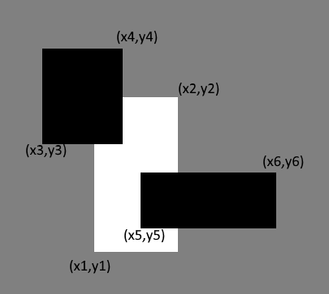

A题 Prefixes：
题目：
Nikolay got a string 𝑠 of even length 𝑛, which consists only of lowercase Latin letters ‘a’ and ‘b’. Its positions are numbered from 1 to 𝑛.
He wants to modify his string so that every its prefix of even length has an equal amount of letters ‘a’ and ‘b’. To achieve that, Nikolay can perform the following operation arbitrary number of times (possibly, zero): choose some position in his string and replace the letter on this position with the other letter (i.e. replace ‘a’ with ‘b’ or replace ‘b’ with ‘a’). Nikolay can use no letters except ‘a’ and ‘b’.
The prefix of string 𝑠 of length 𝑙 (1≤𝑙≤𝑛) is a string 𝑠[1..𝑙].
For example, for the string 𝑠=”abba” there are two prefixes of the even length. The first is 𝑠[1…2]=”ab” and the second 𝑠[1…4]=”abba”. Both of them have the same number of ‘a’ and ‘b’.
Your task is to calculate the minimum number of operations Nikolay has to perform with the string 𝑠 to modify it so that every its prefix of even length has an equal amount of letters ‘a’ and ‘b’.
Input
The first line of the input contains one even integer 𝑛 (2≤𝑛≤2⋅105) — the length of string 𝑠.
The second line of the input contains the string 𝑠 of length 𝑛, which consists only of lowercase Latin letters ‘a’ and ‘b’.
Output
In the first line print the minimum number of operations Nikolay has to perform with the string 𝑠 to modify it so that every its prefix of even length has an equal amount of letters ‘a’ and ‘b’.
In the second line print the string Nikolay obtains after applying all the operations. If there are multiple answers, you can print any of them.
Examples
input
1 | 4 |
output
1 | 2 |
input
1 | 6 |
output
1 | 0 |
input
1 | 2 |
output
1 | 1 |
Note
In the first example Nikolay has to perform two operations. For example, he can replace the first ‘b’ with ‘a’ and the last ‘b’ with ‘a’.
In the second example Nikolay doesn’t need to do anything because each prefix of an even length of the initial string already contains an equal amount of letters ‘a’ and ‘b’.
解法：
每两个字符判断是否相同，如果相同则需要更改一个字母。
代码：
1 | #include<stdio.h> |
B题：Shooting
题目：
Recently Vasya decided to improve his pistol shooting skills. Today his coach offered him the following exercise. He placed 𝑛 cans in a row on a table. Cans are numbered from left to right from 1 to 𝑛. Vasya has to knock down each can exactly once to finish the exercise. He is allowed to choose the order in which he will knock the cans down.
Vasya knows that the durability of the 𝑖-th can is 𝑎𝑖. It means that if Vasya has already knocked 𝑥 cans down and is now about to start shooting the 𝑖-th one, he will need (𝑎𝑖⋅𝑥+1) shots to knock it down. You can assume that if Vasya starts shooting the 𝑖-th can, he will be shooting it until he knocks it down.
Your task is to choose such an order of shooting so that the number of shots required to knock each of the 𝑛 given cans down exactly once is minimum possible.
Input
The first line of the input contains one integer 𝑛 (2≤𝑛≤1000) — the number of cans.
The second line of the input contains the sequence 𝑎1,𝑎2,…,𝑎𝑛 (1≤𝑎𝑖≤1000), where 𝑎𝑖 is the durability of the 𝑖-th can.
Output
In the first line print the minimum number of shots required to knock each of the 𝑛 given cans down exactly once.
In the second line print the sequence consisting of 𝑛 distinct integers from 1 to 𝑛 — the order of indices of cans that minimizes the number of shots required. If there are several answers, you can print any of them.
Examples
1 | 3 |
Note
In the first example Vasya can start shooting from the first can. He knocks it down with the first shot because he haven’t knocked any other cans down before. After that he has to shoot the third can. To knock it down he shoots 20⋅1+1=21 times. After that only second can remains. To knock it down Vasya shoots 10⋅2+1=21 times. So the total number of shots is 1+21+21=43.
In the second example the order of shooting does not matter because all cans have the same durability.
解法：
从大到小排序即可
代码：
1 | #include<stdio.h> |
C题 White Sheet
题目：
There is a white sheet of paper lying on a rectangle table. The sheet is a rectangle with its sides parallel to the sides of the table. If you will take a look from above and assume that the bottom left corner of the table has coordinates (0,0), and coordinate axes are left and bottom sides of the table, then the bottom left corner of the white sheet has coordinates (𝑥1,𝑦1), and the top right — (𝑥2,𝑦2).
After that two black sheets of paper are placed on the table. Sides of both black sheets are also parallel to the sides of the table. Coordinates of the bottom left corner of the first black sheet are (𝑥3,𝑦3), and the top right — (𝑥4,𝑦4). Coordinates of the bottom left corner of the second black sheet are (𝑥5,𝑦5), and the top right — (𝑥6,𝑦6).

Determine if some part of the white sheet can be seen from the above after the two black sheets are placed. The part of the white sheet can be seen if there is at least one point lying not strictly inside the white sheet and strictly outside of both black sheets.
Input
The first line of the input contains four integers 𝑥1,𝑦1,𝑥2,𝑦2 (0≤𝑥1<𝑥2≤106,0≤𝑦1<𝑦2≤106) — coordinates of the bottom left and the top right corners of the white sheet.
The second line of the input contains four integers 𝑥3,𝑦3,𝑥4,𝑦4 (0≤𝑥3<𝑥4≤106,0≤𝑦3<𝑦4≤106) — coordinates of the bottom left and the top right corners of the first black sheet.
The third line of the input contains four integers 𝑥5,𝑦5,𝑥6,𝑦6 (0≤𝑥5<𝑥6≤106,0≤𝑦5<𝑦6≤106) — coordinates of the bottom left and the top right corners of the second black sheet.
The sides of each sheet of paper are parallel (perpendicular) to the coordinate axes.
Output
If some part of the white sheet can be seen from the above after the two black sheets are placed, print “YES” (without quotes). Otherwise print “NO”.
Examples
input
1 | 2 2 4 4 |
output
1 | NO |
input
1 | 3 3 7 5 |
output
1 | YES |
input
1 | 5 2 10 5 |
output
1 | YES |
input
1 | 0 0 1000000 1000000 |
output
1 | YES |
Note
In the first example the white sheet is fully covered by black sheets.
In the second example the part of the white sheet can be seen after two black sheets are placed. For example, the point (6.5,4.5) lies not strictly inside the white sheet and lies strictly outside of both black sheets.
解法：
此文用到的解法，求出两个黑块与白块分别的共同面积，再求出两个黑块在白块中共同的面积，这里要注意，必须是在白块中的共同面积，而不是两个黑块所有的共同面积，白块外的共同面积是无效的。
代码：
1 | #include<stdio.h> |
D题 Swords
题目:
There were 𝑛 types of swords in the theater basement which had been used during the plays. Moreover there were exactly 𝑥 swords of each type. 𝑦 people have broken into the theater basement and each of them has taken exactly 𝑧 swords of some single type. Note that different people might have taken different types of swords. Note that the values 𝑥,𝑦 and 𝑧 are unknown for you.
The next morning the director of the theater discovers the loss. He counts all swords — exactly 𝑎𝑖 swords of the 𝑖-th type are left untouched.
The director has no clue about the initial number of swords of each type in the basement, the number of people who have broken into the basement and how many swords each of them have taken.
For example, if 𝑛=3, 𝑎=[3,12,6] then one of the possible situations is 𝑥=12, 𝑦=5 and 𝑧=3. Then the first three people took swords of the first type and the other two people took swords of the third type. Note that you don’t know values 𝑥,𝑦 and 𝑧 beforehand but know values of 𝑛 and 𝑎.
Thus he seeks for your help. Determine the minimum number of people 𝑦, which could have broken into the theater basement, and the number of swords 𝑧 each of them has taken.
Input
The first line of the input contains one integer 𝑛 (2≤𝑛≤2⋅105) — the number of types of swords.
The second line of the input contains the sequence 𝑎1,𝑎2,…,𝑎𝑛 (0≤𝑎𝑖≤109), where 𝑎𝑖 equals to the number of swords of the 𝑖-th type, which have remained in the basement after the theft. It is guaranteed that there exists at least one such pair of indices (𝑗,𝑘) that 𝑎𝑗≠𝑎𝑘.
Output
Print two integers 𝑦 and 𝑧 — the minimum number of people which could have broken into the basement and the number of swords each of them has taken.
Examples
input
1 | 3 |
output
1 | 5 3 |
input
1 | 2 |
output
1 | 1 7 |
input
1 | 7 |
outputCopy
2999999987 2
inputCopy
6
13 52 0 13 26 52
output
1 | 12 13 |
Note
In the first example the minimum value of 𝑦 equals to 5, i.e. the minimum number of people who could have broken into the basement, is 5. Each of them has taken 3 swords: three of them have taken 3 swords of the first type, and two others have taken 3 swords of the third type.
In the second example the minimum value of 𝑦 is 1, i.e. the minimum number of people who could have broken into the basement, equals to 1. He has taken 7 swords of the first type
解法：
循环遍历数组，得到max，数组中不为max的数与max的差值，求出最大公约数，最大公约数即为每个人取走的数目。
代码：
1 | #include<stdio.h> |